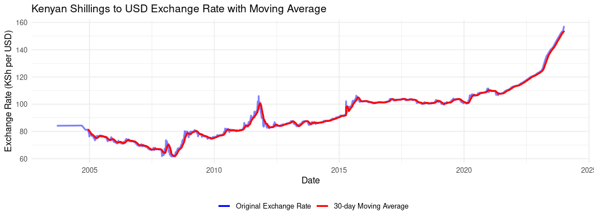

Where Kenya’s Budget Pressure Comes From
Institutions
A revived institutions note on Kenya’s revenue, expenditure, recurrent spending, and debt-service pressure using CBK government finance data through 2023.
Income & Expenditure from 2000 to September 2023
Kenya’s government revenue has grown since 2000, but expenditure has grown faster. The result is a persistent gap between what the government collects and what it spends.
That gap matters because it has to be financed. In practice, this often means more borrowing.
The chart below shows this clearly. Revenue rises over time, but total expenditure remains higher. Spending also increases sharply after the mid-2010s, a period marked by large infrastructure spending and a larger public sector. Around 2020, the jump also reflects the fiscal pressure caused by COVID-19.
The main question is therefore simple: what exactly is pushing expenditure up?
The data used here comes from the Central Bank of Kenya’s Government Finance Statistics. Some 2023 data was still incomplete when this analysis was first done.
What type of expenditure is rising?
Government spending can be grouped into three broad areas.
Recurrent expenditure is the regular cost of running the government. This includes salaries, pensions, interest payments, and other operating costs.
Development expenditure is spending on projects such as infrastructure and other long-term investments.
County transfers are funds sent to county governments under devolution.
The chart shows that recurrent expenditure is the largest and fastest-growing part of spending. Development expenditure rises too, especially during the infrastructure-heavy years, but it does not explain the pressure as much as recurrent spending does.
County transfers also increase after devolution, but they are not the main driver of the overall rise.
So the next question is: what is inside recurrent expenditure?
What is causing the rise in recurrent expenditure?
The recurrent expenditure chart gives a clearer picture.
Wages and salaries have grown steadily. Pensions have also increased gradually as the government continues to meet obligations to retired public workers.
But the sharpest rise is in domestic interest payments.
This means the government is spending more on interest payments for locally borrowed debt. That is important because interest payments do not build roads, hospitals, schools, or other services. They are the cost of past borrowing.
Foreign interest payments have also increased, though not as sharply as domestic interest. They still matter because a weaker shilling makes foreign debt more expensive when converted back into Kenyan shillings.
The key point is this: Kenya’s budget pressure is not only about how much the government spends. It is also about the rising cost of servicing debt, especially domestic debt.
When interest payments take up more space in the budget, there is less room for development spending and basic services. It can also make borrowing more difficult for the private sector if the government takes up a large share of available credit.
Outlook
Kenya has received new financing support from the IMF and the World Bank. This gives the government some breathing room, especially when foreign debt payments are under pressure from exchange-rate movements.
But loans do not remove the problem. They only shift the pressure forward unless revenue grows faster, spending is controlled, or debt becomes cheaper to service.
The difficult part is that Kenya needs investment, but it also has to manage debt. Cutting too much spending can slow growth. Borrowing too much can make future budgets harder to manage.
From this data, the main pressure point is clear: recurrent expenditure, especially interest payments, is taking up a larger share of the budget.
That is where the budget story is.
